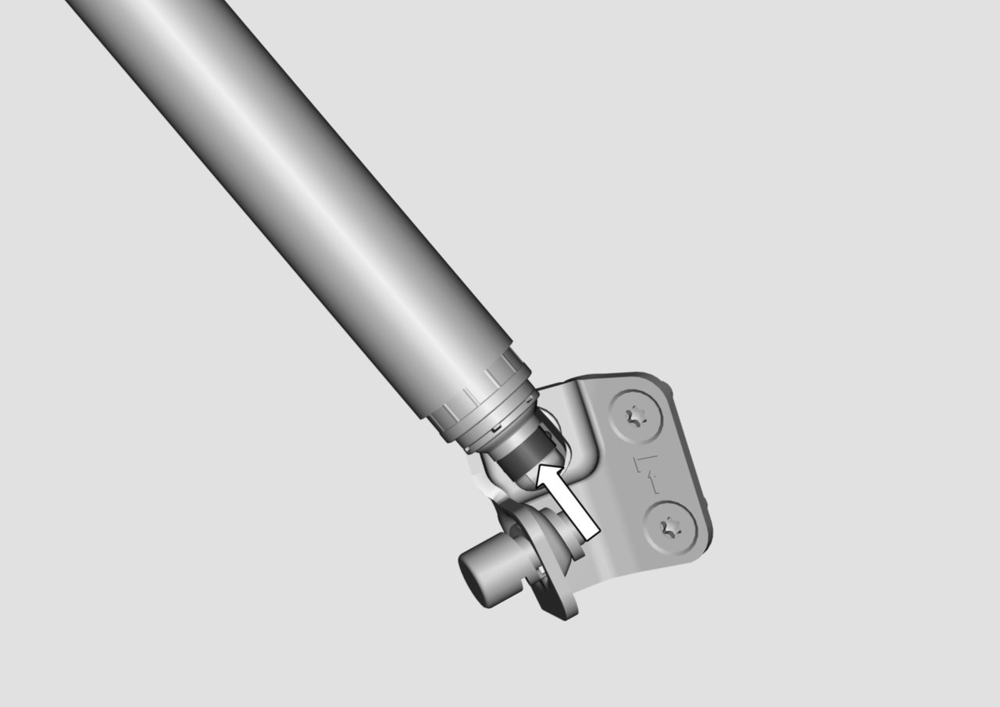
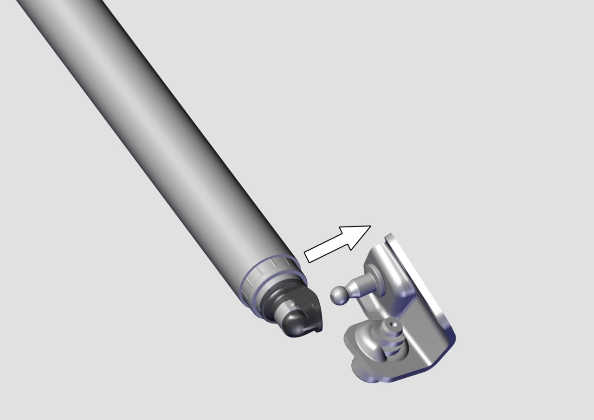

Подсказка
Здесь описаны Снятие и Установка узла опорной штанги механизма привода двери задка с левой стороны, снятие и установка узла опорной штанги механизма привода двери задка с правой стороны в целом аналогичны левой стороне.
При необходимости демонтажа узла опорной штанги механизма привода двери задка дверь задка должна быть надежно зафиксирована на опорах, в противном случае одна опорная штанга механизма привода двери задка не сможет удерживать дверь задка в открытом положении.
Снятие
Слева установлена электрическая штанга, справа — вспомогательная штанга; при демонтаже левой штанги необходимо сначала снять обивку потолка, см. Снятие и установка обивки потолка Снятие и установка обивки потолка, после демонтажа обивки потолка отсоединить электрический разъем жгута проводов опорной штанги.
При открытии двери задка в полностью открытое положение и ее установке на опоры, для демонтажа узла опорной штанги механизма привода двери задка необходимо с помощью тонкой плоской отвертки вставить жало отвертки в пружинный фиксатор узла опорной штанги механизма привода двери задка в направлении стрелки, указанном на рисунке, а затем с помощью отвертки отогнуть пружинный фиксатор на определенный угол, после чего узел опорной штанги механизма привода двери задка можно снять с кузова.

1. Как правило, из двух опорных штанг на одном автомобиле неисправна/выходит из строя только одна; во избежание ошибочной диагностики используйте метод исключения, чтобы определить, какая именно деталь вышла из строя, после чего выполните замену;
2. Для техобслуживания сдуйте пыль с помощью сжатого воздуха с раздвижной втулки опорной штанги; если пыль налипла на раздвижную втулку, удалите ее чистой ветошью или промышленной салфеткой для протирки, а затем продуйте сжатым воздухом;
3. При выполнении малярно-кузовных работ необходимо обеспечить эффективную защиту опорных штанг механизма привода двери задка во избежание попадания краски на опорные штанги, что может вызвать посторонний шум; если для защиты используется малярная лента, после покраски ленту необходимо удалить с опорной штанги, иначе малярная лента попадет внутрь опорной штанги механизма привода и вызовет посторонний шум.
При ремонте и замене узла опорной штанги механизма привода следует избегать ударов и царапин на узле опорной штанги механизма привода, а также повреждения жгута проводов электрической штанги. Запрещается разбирать узел опорной штанги механизма привода, так как это может привести к травмированию мощной пружиной.
Установка
При сборке узла опорной штанги механизма привода убедитесь, что пружинный фиксатор шарового пальца опорной штанги установлен правильно, затем сориентируйте шаровый шарнир узла опорной штанги механизма привода относительно шарового пальца и легким постукиванием защелкните узел опорной штанги механизма привода на шаровом пальце, убедившись, что пружинный фиксатор зафиксировался на сужении шарового пальца, завершив сборку; при сборке узла опорной штанги механизма привода сориентируйте узел опорной штанги механизма привода относительно шарового пальца и легким постукиванием защелкните узел опорной штанги механизма привода на шаровом пальце для завершения сборки.
Слева установлена электрическая штанга; после завершения установки электрической штанги необходимо сначала подключить электрический разъем жгута проводов, а затем установить обивку потолка, см. Снятие и установка обивки потолка
